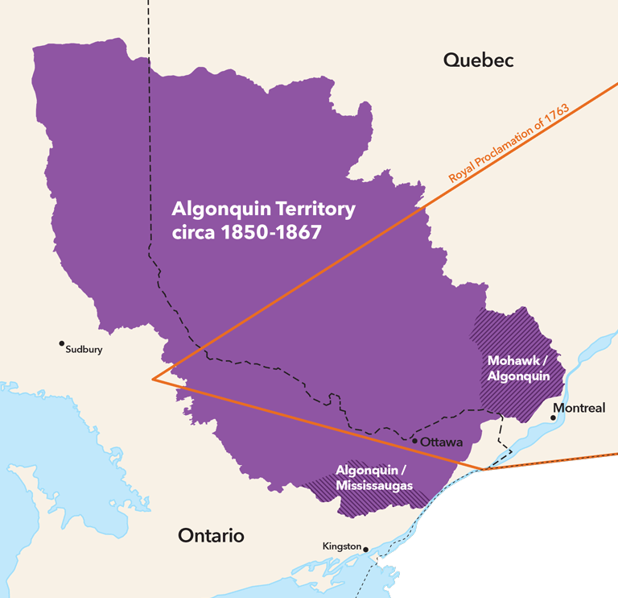
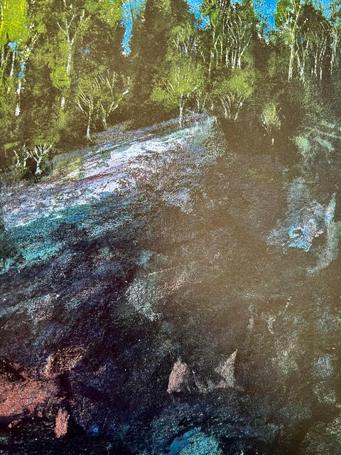

Le chemin de portage Dumoine reste beau et sûr uniquement grâce aux actions de nos bénévoles et de nos visiteurs. Partagez vos histoires et lisez les nôtres ci-dessous !
Partagez votre visite !
Album photo
Avez-vous parcouru le sentier récemment et avez-vous des photos que vous souhaitez partager ? Importez-les dans notre album Google Photos :
Entrer en contact
Voulez-vous nous dire comment s'est passé votre voyage ou avez-vous des inquiétudes concernant le sentier? Contactez-nous via notre formulaire de contact :
Lisez sur nous !
Wally Schaber et la dernière des rivières sauvages
Épisode 42 de la série Explore : Un podcast de Canadian Geographic
Le 12 juillet 2022
Écoutez ci-dessous l'animateur du podcast, David McGuffin, s'entretenir avec notre propre Wally Schaber au sujet du bassin versant de la rivière Dumoine !
Ce podcast a été enregistré en anglais. Pour plus d'informations et pour découvrir d'autres de leurs podcasts, consultez le site Web de Canadian Geographic.
Territoire algonquin
Politique et droit : Le titre de propriété des Premières Nations dans la vallée de l'Outaouais
posté le 30 avril 2018

Territoire algonquin au Québec et en Ontario ; d'après une carte originale de PlanLab (Toronto)
Les ancêtres des Algonquins d'aujourd'hui étaient bien établis dans la vallée de la rivière Dumoine et dans la région environnante, des deux côtés de la
frontière Québec-Ontario, lorsque les Européens sont arrivés au Canada. L'expansion et la colonisation de ces terres au cours des 18e et 19e siècles ont empiété
sur les terres traditionnelles des Algonquins et de nombreuses autres communautés des Premières nations. Dans leur article, les auteurs de Canada's History se
penchent sur le territoire traditionnel de la vallée de l'Outaouais et sur les problèmes actuels liés à l'absence de traité de partage des terres dans la région.
Pour lire cet article et d'autres, cliquez sur le bouton ci-dessous pour vous rendre sur le site Web de Canada's History.
Histoire et aventures
Bill Mason et la Dumoine
écrit par Wallace Schaber
juillet 2022
Dans ce court article, Wally parle de ses expériences avec Bill Mason et de la façon dont la voix de Bill résonne dans la vision que les Amis de Rivière
du Moine ont élaborée au fil des ans. Cliquez sur le bouton ci-dessous pour en savoir plus sur Bill et son talent pour capturer une scène avec de la peinture.
Pour lire cet article, cliquez sur le bouton pour révéler le texte complet. Cette histoire n'a pas encore été écrite en français.
A TRIBUTE TO BILL MASON
Bill Mason always sketched and/or painted while he canoed through his favourite wilderness areas including the Dumoine Valley. He would always distinguish,
in terms of gear and selection of canoe partners, between a slow trip to paint and a whitewater expedition for exploration. I was fortunate enough to paddle
with him on several whitewater trips including his first Dumoine trip in 1974.

Dumoine Rock in Light and Shade by Bill Mason
He returned to the Dumoine watershed several times but only painted one scene he specifically titled DUMOINE ROCK IN LIGHT AND SHADE. I
believe this is the rock on the west shore of the first major rapid below Lac Benoit.
Bill was an amazing blend of talent and energy. Aside from his dedication to painting, film and canoeing he was a tireless defender of wilderness
conservation and a motivator of people to get them out into the wilderness safely. His theory was:
"If you can get people to fall in love with wild places they will defend (with their voice, money and vote) its preservation".
I believe this as well, that the creation of the website SENTIERDUMOINE.CA is another step in that direction.
Bill was a dedicated Friend of Rivers. We formed Friends of Dumoine twenty eight years after his death but I know he would have been a strong voice in
support of our goals of conservation and interpretation of the Dumoine Valley and getting more self propelled users travelling its water, snow and land
trails respectably.
Self Portrait on the Petawawa River by Bill Mason
This next painting is a self portrait Bill did of himself running The Natch on the Petawawa River in his beloved Red Chestnut Prospector. This timeless
picture is exactly how I remember Bill; skilled, enthusiastic, adventurous, a link between the past and the future and an artist that could capture the
essence of the canoe and moving water.
For more information on Bill and his art and films visit the website below.
Promenade sur le sentier du toboggan en bois
écrit par Wallace Schaber, Les Amis de Rivière du Moine
juillet 2022
Dans cet essai en deux parties, suivez Wally dans ses explications sur l'infrastructure de l'industrie forestière historique de la rivière Dumoine. Il poursuit
son voyage avec une visite à pied encadrée du sentier de glissement du bois de Grande Chute, qui va du pont au point de départ du sentier nord jusqu'au camp
Ankose. Cliquez sur le bouton ci-dessous pour lire les deux parties !
Pour lire cet article, cliquez sur le bouton pour révéler le texte complet. Cette histoire n'a pas encore été écrite en français.
PART ONE: Dumoine Hiking Trail Historic Highlights
The Grande Chute Timber Slide
In 1871, the longest timber slide in the world was built around Grande Chute on the Dumoine River. Today you can still trace the remnants of this structure.
Here is a guide to walking the Timber slide trail.
BACKGROUND HISTORY
The progression of logging operations up the Dumoine Valley was made possible by three essential infrastructure steps:
Creating a reliable way to get supplies up to the shanty camps
Creating a quicker way to get the logs to market
Adapting to changes in markets
STEP ONE
Three decades after Philemon Wright first piloted and sold a raft of Ottawa River timber to British merchants in Quebec City (The raft 'Colombo', 1806), cutting
timber began one hundred miles upriver at the mouth of the Dumoine.
The first step in getting supplies to the lower Dumoine shanty camps was taken by Roderick Ryan and John Egan in 1840. Ryan, after cutting timber at the mouth
of the Dumoine for a couple of years, built a four mile road from his crude supply base at the mouth of the Dumoine up to his next timber lease upriver. The road
was used to haul supplies by sleigh and wagon into his camps near Ryan's Chute. John Egan extended the road another three miles to the junction of the Dumoine
and Fildegrand, then up the Fildegrand to where he had logging operations.
In the mid 1840s, Egan had shanty camps along what was then called 'The West Branch' of the Dumoine. By the 1850s these roads were extended to Six Mile Lake on
the West Branch and to Grande Chute on the Dumoine.
It was estimated it took three pounds of supplies, to power horse and man, to support operations for cutting every board foot of lumber taken out of the
Dumoine forests.
STEP TWO
The first market for Dumoine lumber was in Britain, and the very best giant Red and White Pines were cut, squared and rafted to the port of Quebec. Right where
they fell, these forty foot logs were squared to fit more efficiently inside the hulls of the British sailing ships. It was a long journey from the Dumoine to
Quebec. It began with the ice breakup in April, after the December to March winter cutting season. It ended in June when they were delivered to timber merchants
at Quebec to honour a contract signed the previous year. The individual logs were 'coaxed' over falls and rapids down the Dumoine to the Ottawa River by log
driving specialists, then assembled into large rafts. Smaller crews guided by experienced pilots lived on the rafts, and moved them slowly by wind, oars and the current,
down the Ottawa and St Lawrence. It was a journey punctuated by periods of dangerous action. The rafts had to be taken apart and the single logs floated through
the rapids on the Ottawa and then reassembled below.
If a company was late to market and the ships were either full or had left, then the logging company often went bankrupt.
In 1829, a project to hasten the Ottawa River raft trip began. A successful experiment to adapt the single stick slide Ruggles Wright had observed in
Scandinavia was introduced. A 'Canadian size timber slide' was built by the Wrights on the Wrightstown side of Chaudiere Falls. This began the process of
building a chain of private timber slides at each rapid on the Ottawa. These slides allowed the large timber rafts to be built in sections (20' x 40+'
cubes of logs) called cribs. These cribs could bypass the rapids by being navigated down the slides and then reassembled into the giant rafts, thus saving a great
amount of time, damage and loss of logs.
The closest Ottawa River timber crib slide to the Dumoine was located seven miles below the mouth at Rapides-des-Joachims. It was completed in 1844 when all
the slides were built or taken over and improved by the government to ensure equal access and quality. These Ottawa River slides, when combined with several
'improvements' constructed along the Dumoine and Fildegrand Rivers, made square timber logging economically feasible on the Dumoine as high as Lac Dumoine by 1855.
STEP THREE
The last squared timber raft was taken to Quebec City in 1908 by J R Booth. The squared timber era on the Dumoine spanned approximately four decades from
1840 to 1880, but two changes in the lumber market allowed the lumber companies to prosper by cutting different size trees higher up the Dumoine watershed.
The growth of cities in the United States created a great demand for sawn lumber. In 1854 a treaty was signed permitting Canada, which was still a British Colony at the time, to
export lumber duty free to the United States. This created a rush for buying and building saw mills at Chaudiere Falls, and lot sites being sold by the government.
This prompted the creation of a new industrial complex there with mills, lumber yards, labourers' homes, and railroad and barge transportation networks in the
late 1850-1870. At the peak of the saw log era in the 1880s, these mills were producing 424 million board feet of lumber annually.
Many of the sixteen foot saw logs that supplied these mills came from the Dumoine Valley. A sixteen foot log was much easier to cut, haul, river drive and pull
by steamboat (in booms versus rafts) down to these mills. The saw log era allowed lumber companies to operate profitably, cutting logs well above Lac Dumoine,
anywhere water routes allowed logs to be floated to the Dumoine watershed. J R Booth even dug his own canal to link one of his Dumoine Timber limits to the
watershed. Both J R Booth and E B Eddy had unassembled Alligator Boats delivered in the winter by sleigh to their depot on Lac Dumoine. These boats were used for
towing log booms to the start of Long Rapids on the Dumoine River. You can see the remains of them on Lac Laforge today.
The final adaptation to the loggers' forest options occurred with the invention of making paper from pulp logs. This process used inferior shorter length and
diameter logs of softwood and hardwood species. These could be harvested from the poorer quality trees which were passed over in the earlier 1800s because they were
unsuitable for lumber.
By 1900, the demand for newsprint in the United States convinced mill owners at Chaudiere, led by E B Eddy and J R Booth, to convert to making newsprint using
pulp logs. Thus the cutting and river drive practices on the Dumoine changed again. The small pulp logs did not need the protection a timber slide offered the
bigger more valuable saw and squared logs, so the lumber companies did not pay the duty fees charged to use the timber slide. The Dumoine slide was slowly
abandoned, and likely disassembled to salvage some timber, in the 1920s. By 1960 the process of moving the logs had switched to hauling by truck.
The last river drives occurred on the Dumoine River in the spring of 1961 and on the Ottawa River in 1990.
THE Ka-ishpa-kog Boweetig / High Falls / Grande Chute TIMBER FLUME
On a Dumoine canoe trip from Lac Dumoine to the Ottawa River, there are seven portages around significant drops and another hundred plus rapids to negotiate.
There were even more for the log drivers. Two kilometres of whitewater known as Poplar Rapids was the last challenge leading to a massive log boom at the
mouth of the Dumoine. The Poplar Rapids, below Ryan's Chute, have been drowned out by water backed up behind the dam at Rapides-des-Joachims since 1950.
Wing dams, flat dams, water level control dams, piers and retaining booms were all river improvement structures along the Dumoine and Fildegrand Rivers built to keep
the logs moving into the main current. But none of these minor log traffic control structures would do the job at the biggest and most dangerous river obstacle
on the river.
The fifty foot drop known as Grande Chute in French, High Falls in English and Ka-ishpa-kog in Algonquin, consists of a thirty foot drop over the first 300
metres then another ten vertical feet of decent over the four more chutes confined within a kilometre of steep granite shoreline. Grande Chute was costly on
logs lost or damaged and dangerous for the men asked to keep the logs moving. The drops often created a logjam requiring the river drivers to demonstrate great
skill and bravado to break up the tangled logs.
A company called The Dumoine Boom and Slide Company - a cooperative of all the lumber companies using the Dumoine to drive logs - built all the first river drive
improvements and roads between 1840 and 1860. By 1860, the Government Department of Public Works took over managing the Ottawa River Slides and all tributary
improvements under the guidance of Horace Merrill.
The first timber flume at Grande Chute was a 300 foot version that was built along the west shore, bypassing Grande Chute's first drop. The second version was a
3334 foot flume built through the woods parallel to the shore coming out just before the last drop in the Grande Chute series. It reentered the river just above
a campsite we've named Ankose, an Algonquin word meaning 'all things are connected'.
NOTE: A slide was the name for the large Ottawa River structures built wide enough to accommodate the 20 foot wide timber cribs. A Flume was a structure of
varying width built to carry individual logs around a difficult drop on a tributary of the Ottawa but the term slide was used more often to describe the large
Dumoine and Coulonge Slides.
There was no bridge across Grand Chute until 1890-1900. I have not been able to find any photos of the original bridge or flume except for one from the Dumoine
Club archives and one I took in 2010 (just before it was destroyed during the construction of a new bridge).
PART TWO: A THREE HOUR WALKING TOUR YOU CAN TAKE TO DISCOVER THE REMNANTS OF THE GRANDE CHUTE FLUME
Begin your walk by standing in the middle of today's Grande Chute bridge. This bridge is supported by two massive steel beams. It is the third version of the
bridge I have seen since 1969. The first one in the 1960's was located ten metres further upriver built upon the original cribs assembled here. I believe the
first bridge was built by the Hawkesbury Lumber Company and supervised by their famous foreman Billy Vaughan, circa 1900. It may have crossed from the east
shore to the island you see upriver and back to the west shore built on top of the original flumes entrance cribs. It only had to support wagons and sleighs.
The Hawkesbury Lumber Company maintained a large depot five kilometres upriver from Grande Chute from the 1860s to approximately 1910. It was sold, along with
several timber limits, to the E B Eddy Company. The now decayed and disappeared site was known as Rowanton and operated until 1968 when its last owners, the
Eagle Lumber Company, abandoned it after a fire. Its post office building was bought and moved to the Dumoine Club site upriver. The other salvageable buildings
were taken apart and rebuilt as camps in the area.
This one hundred year old depot site today is connected to Grande Chute by the road going northeast and uphill from the east side of the bridge. This road,
however, was a secondary trail before the bridge was built. The main route to the depot was up a road along the west shore to a narrows called Lacasse Point
where the current was suitable for a winter sleigh ice road and a summer crossing by boat or horse.
Horace Merrill, the man who built the most dams, slides and booms on the Ottawa River, took on the task of supervising the building
of the longest slide in the world (3384 ft) at Grande Chute in 1872. Merrill was the Superintendent of Public Works for the Ottawa River from 1849 to
1875 and among hundreds of projects he supervised, eleven were in the Dumoine watershed.
The winning tender to build the slide for $14,005 (the equivalent of $300,000 in 2022) was awarded to William Davis on July 10, 1871. The slide was started
during the low water season of that year and completed by June 1872.
The first slide master was 44 year old Hugh Grant. During the four month log driving season (April to July) he would have commuted from Rowanton. He was paid
$2/day to collect a toll of 15 cents per piece for each red or white pine floated down the slide. There would have been tens of thousands of logs floated down
the slide during the peak years (1871-1900).
Hugh Grant`s family and five other families (twenty adults and children) were recorded in the 1871 census as living at the Hawkesbury Depot. The tradesmen
included Hugh Grant (timber agent), David West (bookkeeper), William Hutchinson (farmer), Thomas Mosgrove (blacksmith) and Joseph Labelle (hotel keeper
(stopping place)).
In 1906, the government surveyor J E Girard completed a detailed survey of the road from the Ottawa River at Rapides-des-Joachims to Rivière du Moine and to the
Rivière Noire as far as Lac St Patrick. He included a detailed sketch of the Hawkesbury Depot and the bridge and glissoire (French for slide) at Grande Chute. His sketch
seems to show the bridge was a walking bridge likely built to control water levels with log booms.
The first flume entrance consisted of two rock-filled cribs near the west shore, one supporting either side of a 12' wide slide. The slide's flat bottom was
made of large pine planks called deals (measured at 12'x2.5”x10”) .The water level of the entrance was controlled by a cofferdam shutting off water from flowing
on the east side of an island just upriver from the falls, diverting it into the west timber slide channel or vice versa during construction of the slide. In
1969 I observed some of the planks that formed this dam standing up vertically anchored to the bottom with rocks. I imagine the first bridge would have
incorporated a link from each shore to this island, but I don't know this for a fact.
If you are looking upstream - or better yet if you walk to the canoe portage landing to look - you can see the remains of the rock cribs that framed the entrance
to the slide.
Now look downriver. The slide would have gone under the bridge, and indeed in low water you can see one of the huge spikes that held the base of the slide to
the granite island below the bridge. Imagine two men drilling the hole for this spike: one holding a drill bit and turning it a quarter turn after every blow of
a sledge hammer swung by his trusted partner until a 6' deep hole was cut into the rock. Obviously the water had to be diverted away from the drilling site by a
control dam to build the slide. There are several of these spikes all along the west shore visible in low water. These would have held the base of the original
1850s slide that bypassed the first drop you are viewing from the bridge.
Now look closely along the west shore and you will see a small cove between two granite rocks. That's where the 1871 timer slide was engineered to detour
into the forest. It proceeded 3000 feet to the bottom of the Grand Chute series of rapids. The original slide was taken apart and the materials used to form
this new detour slide. Let's walk down the trail for five minutes to a point where you can descend into a canal shaped depression that held the 1871 slide. We only
found its start in the cove by tracing the route with metal detectors. There are hundreds of 6-18” spikes along the route of the inland slide. We traced the spikes with
our detectors upriver to the previously mentioned cove. Try to walk along some of this first part of the 1871 detour which is now flagged (be careful here:
the footing is difficult) to understand the difficulty of engineering and building a proper slide with a gradient to hold enough water to float logs.
The base of the slide was a series of large cross braces that held the calked flat planks that retained enough water to keep the logs moving. There is no
known picture of the Dumoine inland slide, but several pictures from similar slides built in Algonquin or on the neighbouring Coulonge or Bear Rivers give you a
good idea what this slide looked like. Remember, the slide was only used in April and May when the water was at its peak and there was lots of volume to divert into
the slide.
At a point down the hiking trail just before the campsite called Bellevue, we indicate where the slide went inland. You can see a series of old logs that
formed the base. There is an obvious route the slide took to a point 2000 feet further along. Here, where it was directed back 500 feet to the river, the
terrain is very rough. The construction of the base must have been very difficult.
In low water from the viewpoint at Bellevue Camp you can see an unnatural pile of rocks in the canyon at the foot of the falls. These were the rocks that were
contained in the crib that held the base of the end of the 1850 first edition of the slide.
How did they build these cribs? Most often the cribs were built onshore in the winter, manoeuvred into place on the ice, filled with rocks by hand, then the ice
below was cut away and they would settle into place. In very low water I scrambled along the west shore between the cove and this crib. At about 20 foot
intervals, there are the huge spikes drilled into the granite shoreline that held the first timer slide. I know labour was cheap in 1850, about $1.00 per day,
but still the degree of difficulty of working conditions to construct these timber flumes is mind numbing.
You can follow the flagged trail of the inland timber slide or walk on the easier river portage trail to the exit point of the slide above Ankose Camp.
We will be creating a point of interest sign at this point where the inland slide returns to the river. Jammed against a large boulder, the log flume exit
entered a small bay above the last chute and rapids leading to a holding pond below. A pointer boat and men with pike poles or peaveys would be posted here to
make sure the logs headed out into the current. They were assisted in this task by a four foot high wing dam that was built out to the end of a granite point
that is part of today's campsite. You can see a series of four large spikes in the rock that held the base of this wing dam. Three of them are bent, speaking to
the force of the spring water filled with logs that pressed against the dam.
Imagine what that force would do to a man! Many a pair of boots were hung on a cross or tree on the Dumoine as a simple logger's tribute to their fellow workers
that drowned. It was an acceptable practice to exchange your boots for the hanging pair if the hanging pair were in better shape.
The portage and the wild river ride for the logs ends at a beautiful pond. We have created a campsite here called Ankose (Timberbrand in English).
Each of the saw logs was stamped with the owners brand to allow companies to claim their logs to keep them moving. There is an old crosscut saw placed at this
campsite that the Rapides-des-Joachims youth group has painted with eight of the most popular Dumoine Timber Brands. If you're extremely lucky you might find
a dead head or beached log today with an old brand on the end or side.
EXIT
You can continue down the hiking trail to Robinson Lake or return back to Grande Chute by the upper canoe portage trail created in the 1980s or the original
river portage trail created eons ago by the Anishinabeg families that lived here and other first nation traders on their way to and from the Kichi Sibi.
Check out the original post by clicking the button below!
Histoires de la chemin Dumoine : Charles Meech
écrit par Wallace Schaber
juillet 2022
À partir d'une collection de sources, Wally écrit sur la carrière et la mort de Charles Meech, un patron du bois de la fin des années 1800. Une grande partie de
sa vie et de son travail est documentée dans les Archives nationales, y compris les journaux personnels et les lettres à sa femme, Ellen. Suivez le récit
ci-dessous pour en savoir plus sur l'exploitation forestière sur la Dumoine.
Pour lire cet article, cliquez sur le bouton pour révéler le texte complet. Cette histoire n'a pas encore été écrite en français.
STORIES FROM THE DUMOINE TOTE ROAD
A TIMBER BOSSES WINTER ON THE FILDEGRAND RIVER, 1869.
Compiled from The Charles Meech files containing personal field log books, letters and receipts in the National Archives,
Joan Finnigan's book “Some of the Stories I told You Were True”, and The Decision was made to Demolish the House by Marion Meech.
Charles Meech died on a cold November day in 1881 near Mattawa in a cruel manner that claimed many a lumberman. He was working from a pointer boat coaxing
logs downriver with a peavey pole at the top of a section of rapids when he slipped and was swept down a series of large standing waves.
In the cold water, dragged deep by heavy wool clothing and leather boots and fighting off the logs that pushed his head below the surface, Meech drowned
before he was rescued below the rapids.
Twenty five of his forty five winters were spent cutting timber in the Kipawa and Dumoine Watersheds. He wasn't buried on the portage and his boots weren't
hung on the nearest tree as was the custom among the river drivers. He was transported to Mattawa then Aylmer to be buried properly as he was a bossman.
In the winter of 1869 Meech began cutting pine on the west branch of the Dumoine now called the Fildegrand River, but a boss's work began much earlier. From
mid June to mid August, Charles led a domestic life at home in Aylmer getting reacquainted with his family and arranging his financing. Beginning in August he
would hire his key employees: the cook, foreman and other loyal men he had worked with for years. In the late 1870s a standard contract book
would be filled out by Meech and marked with an X or other personal mark by the employee. Prior to the contract books, a handwritten note in his field
notebook sufficed. They would agree on a term, job description, monthly salary and where and when they would meet. There was a small advance given to seal the
deal and often some personal conditions, hand written into the margin like “send a portion of my monthly salary to my wife”.
It was also written that the employee would forfeit their wages if they left early. Some were to arrive early to prepare the camp and some were contracted to
remain after the winter cutting season and 'stay the run', meaning to drive the logs on to the Ottawa River.
Meech would work hard planning his supplies and arranging for the thousands of pounds of supplies, everything from chains to oats, to be freighted to
Rapides-des-Joachims by steamboat and then on to the camp by wagon or sleigh. In one sample invoice the quantity and variety of goods and services,
valuing 2218.80 British pounds, was substantial including: “chains, traps, horse shoes, axes, pipes, box stove, rope, candles, ten barrels of biscuits, bags of
corn, nails and services — freight, storage, wharfage, room and board at Colton Hotel, hay and stabling for horses”.
This freight arrived at Rapidies-des-Joachims from Aylmer or Pembroke or was delivered by contracted farmers. It all required a trusted partner like Moses Holt
- formerly a neighbour of Meech's in Aylmer, then the slide master at Rapides-des-Joachims - to check and store the load until Meech arranged for it to be moved up the tote road
to the shanty camp.
Another invoice from Meech's personal journal shows an invoice from John Cockburn for repairs done to the Meech Pointer Boats. The Pointer Boat was a
Cockburn invention built in Cockburn's factory in Pembroke. They were used to move men and freight down the rivers. They were made of heavy reinforced and
caulked cedar planks, pointed and raised at each end from a flat shallow draft bottom designed to 'float high on a heavy dew'. Their lengths varied depending
on the company's preference and the size of the river where they were destined to be put to work. One or two pairs of oars in the right hands could spin a
pointer on a dime, or the pair of oars could be split and used as paddles, and the skilled 'Draveurs' took great joy in running the whitewater with one oarsman
in the bow and one in the stern.
Usually painted red, these unique boats moved the camp gear, food and cook downriver, and moved the river drivers armed with pike poles and peeves close to
the log jams on the spring river drives. The pointer boats were one more item Meech had to order, repair and move into place before the cutting began.
A year earlier, Meech likely personally scouted the Fildegrand with his best timber cruiser, climbing up the high trees to lookout and identify where the best
stand of pines were located. They then would have mapped out the location for the shanty camp and the skid roads for the horses to haul the big loads down to the river.
The Cullen Brothers, John Egan, Joseph Aumond, the Hamilton Brothers, and Roderick Ryan had been cutting the big square timber on the west and main branch of
the Dumoine for two decades before Meech arrived.
A good wagon and sleigh road existed eighteen miles up the Dumoine to Grande Chute and another up to Six Mile Lake on the west branch, which has now reopened as
the Dumoine Tote Road hiking trail.
There were also improvements on the river: dams, log walls, chutes and trails already in place that Meech could repair to take advantage of for the spring
drive.
His shanty location is not exactly known, but there is a very old camp located at Devils Chute on the Fildegrand just below Cullen Lake. Based on his
letters home describing it, this could well have been his shanty location.
The first men into the camp in the fall would build a low rise log wall and sod roof building called a shanty, which combined a cookhouse and sleeping quarters.
They would also build stables for the horses, a storeroom with a root cellar, and an office with sleeping quarters for Meech. There was a mountain of firewood
to cut, simple skid roads to clear, freight to haul, and patches of wild hay to cut and dry. By December all was ready and the men and horses were in place ready
to work as soon as the snow was deep enough.
A two month mind-numbing routine of daily dawn to dusk hard work began in December. Sunday was a day off: a day for mending clothing, sharpening tools, a few
games of strength or chance, music, perhaps a hunt or fishing for fresh meat, and occasionally a visit from a travelling priest. A few men could read and
write, but the smoke and light was so poor in the shanty that such a luxury was rare.
If Meech or a traveller was making a run to Rapides-des-Joachims, the closest post office, a quick letter home was written - or dictated to those who could
write by those who couldn't - for Meech to mail.
The winter of 1869 was all work. Meech writes home several times and snippets between the family affairs tell the story; after a quick business and family
trip to Aylmer in early December he writes home:
DECEMBER
“arrived safe at the Fildegrand shanty on the 8th day after leaving you” [He would have been travelling by snowshoe and a light bosses sleigh and probably
spent a night or two with Moses Holt at the Colton Hotel in Swisha] - “Parker arrived here all right with the horses; he got here Monday evening. They had a
hard time from the mouth of the Dumoine on account of the heavy snow and had to leave their loads and put two span on one sleigh to break the road”
JANUARY
“I came down [to Des Joachims] with four teams to break the ice road We return tomorrow and do not expect to go down again this winter”
MARCH
“Our hired teams all leave today; we have all the timber out” (This means that the timber is pulled to the rollaways or on stacked on a lake
awaiting breakup.)
APRIL
“We have done making timber; the last of the horses leave tomorrow and we start the drive” - “I have walked 400 miles or more since I left you”
Meech got his own winter's cutting of stamped saw logs out to the mouth of the Dumoine where it was added to the other companies' logs coming out of the
Dumoine Valley. The Upper Ottawa Improvement Company (IOC), a cooperative formed by all the upper Ottawa River companies, took over here, moving everyone's
logs to the Ottawa Mills.
Before heading home, Meech had a couple of well paying jobs to do to top up his bank account. The McConnells asked him to build a timber slide at their new
mill in Mattawa, suggesting he had the skills to do so. Before his death, Renaldo (Meech's brother-in-law) had sold all his Temiscaming timber limits to James
McLaren of La Peche (Wakefield). McLaren had visited Meech at his shanty on the Fildegrand that winter and negotiated with him to pilot a raft of McLaren's
square timber cut near Temiscaming to English timber merchants at Quebec City for three hundred dollars, a large pay for two months work (about $8000 today).
Meech writes Ellen:
“It will probably take from the 30th of April till about the last of June. to reach Quebec I should be in Ottawa the 15th or 20th of June unless the river
breaks up very late” [for a short visit on my way to Quebec]
There is a receipt in Meech's files issued by the Crown Timber Office on June 23 “One raft left the Ottawa Timber slide for Quebec belonging to James
McLaren, signed for by CGM (Charles Gordon Meech)” so he did make it to see Ellen and his family on schedule.
He would spend another eleven years keeping up this lifestyle until that fateful day in November 1881 when a slip sent him to Big Pine Country in the sky.
Charles Meech, like many of the bosses in the bush, always dressed like a gentleman in a collared shirt and tie complete with vest and tweed jacket to
distinguish himself from his employees. Some references suggest Meech was very conscious of his appearance. He most often sported a top hat and carried
business cards when in Aylmer-Ottawa. He was also known to have a good suit of clothes sent to Rapidies-des-Joachims to travel home in style after the drive. Though he
was the bossman who paid the salaries and financed the winter shanty supplies, he worked hard on the frontline with his men. His job was very taxing,
requiring him to be forever travelling and supervising the operation to keep the supplies coming and cash going that kept the lumber camp machine alive.
Charles Gordon Meech never advanced up the timber staircase far enough to be called a lumber baron. Although he had his own brand and timber berth, most of
his career was spent as a jobber cutting and rafting timber under contract for the real lumber barons.
Charles Meech was an educated man, born the son of a preacher in Hull Township in 1836. His father Asa came to Philemon Wright's fledgling community on the
banks of the Ottawa River in 1818. Ellen Meech, sister of lumber baron David Moore and relative of many Dumoine area Moores, was the wife of Charles Meech.
Sites historiques le long de la Dumoine
écrit par Wallace Schaber
juillet 2022
Plusieurs endroits le long de la rivière Dumoine ont du poids dans les archives historiques. Dans l'article ci-dessous, Wally se concentre sur les haltes gérées
par trois familles : les Dufoe, les Bertrand et les Potvin. Ces familles ont exploité des fermes dans le bassin versant de la Dumoine à la fin du 19e et au début
du 20e siècle, et leurs dossiers couvrent plus de 50 ans de recensements canadiens. Wally nous fait découvrir les années d'expansion de la ferme de chaque
famille.
Pour lire cet article, cliquez sur le bouton pour révéler le texte complet. Cette histoire n'a pas encore été écrite en français.
Historical sites along the Dumoine
Mouth of Dumoine Stopping Place - The Dufoe Family
1861 Census
Paul Dufoe was the middle son of Joseph Dufoe and Mary Simpson-Dufoe, and one of twelve children. Joseph Dufond / Dufoe / Dufault, was born in 1823, son
of Nicolas Dufond and Agatha Jawbone (sometimes written Jeanveau)(descendants of Antoine Nijkiwiwisens). Joseph had married Mary Simpson in Chapeau in
1852. She was the daughter of Jeanette Robinson & Alexander Simpson (a Scottish man who abandoned them and went back to Scotland). Mary Simpson was born
in Red River District in 1839. She identified herself as Scottish decent and Joseph identified as French. Mary's mother however, Jean Portelance, born in
1805 in Red River, identifies as First Nation.
Workers and horses at a logging camp
Mary and Joseph, their four oldest children John (1855), Joseph (1857), Mary (1858), William (1859), and Jean Portelance/Mary Simpson were all registered
in the 1861 census as living in a log home in Rapides-des-Joachims. Their neighbours at the time included Benjamin Sweezy's family, Frederick Ferris'
family, and the Holt-Colton family that ran the best hotel in town. Staying in that hotel and recorded in the 1861 census was Duncan Sinclair, the man in
charge of the surveying of Aberdeen and Aberford Townships, which included the mouth of the Dumoine and upriver to Grande Chute.
Since 1858, the townships on the Upper Canada side of Rapides-des-Joachims were being surveyed for settlement as well as a new road to link Pembroke to
Mattawa. The steamer Pontiac from Pembroke was arriving daily, and the Rapides-des-Joachims and the local timber slide and tote road was very busy. It
must have felt like the area was going through a boom to friends Benjamin Sweezy and Joseph Dufoe (spelt Dufort in 1861 census). Benjamin was the first
to move.
Workers squaring timber1871 Census
This is the first census of the new Confederation of Canada.
On the Dumoine River, several Algonquin and European settlers are enumerated (the one and only time Dumoine is enumerated separately from Aberdeen
Township), including Benjamin Sweezy and his family who are running a farm, stopping place and shoemaker's shop at the mouth. Many a Dumoine logger must
have bought or repaired his Clog Boots at Sweezy's Shop while staying overnight. I believe Sweezy would have started this operation by salvaging the
remains of the groundwork done by Ryan, HBCo and all those that used the site previously. Sweezy was the ICO agent for the Dumoine Boom at the mouth.
Given the advanced development of his farm, shop and services by 1871, I believe he started his operation circa 1867.
In 1871 Joseph and Mary Dufoe are still living in Rapides-des-Joachims, which has more than doubled in population. Mary and Joseph added Oliver (1861),
Paul (1864), Benjamin (1866), Cecelia (1867), and Sophia (1868) to their family. A 61-year-old Scottish widow named Jane Robinson (born 1810) is living
with them. This is Jean Portelance Joseph: in all other censuses he identifies himself as a laborer but in 1871 he calls himself a stonemason suggesting
he specialized in foundations, chimneys, piers etc.
By 1875 Benjamin Sweezy had developed business interests further upriver at Rocher Capitaine. His father Aaron and three other teenage relatives from New
Brunswick, likely nephews of Benjamin's, were running a tavern in Rapides-des-Joachims likely financed by Benjamin. It's not known when exactly he sold
or leased the Dumoine Mouth Stopping Place to Joseph Dufoe, but there is a clue in the next census.
How big was the Sweezy/Dufoe Farm?
In the 1871 census (the only census that recorded this) Sweezy owned 400 acres: 300 were occupied, 50 were improved and 1 was a garden. They produced
annually 100 bushels of barley, 20 of peas, 200 of potatoes, 23 tons of hay and 300 cord of wood with butter and fish also sold. Aside from his living
quarters and livestock stables, Sweezy had established a shoemaker's shop employing 2 people and it was making a reasonable income. When combined with
overnight accommodations, meals, and stable fees for travellers, boom agents and other contracts, the operation was profitable. The Sweezy's, then an
expanded workforce of Dufoe's (minus the shoemaker), could make a reasonable living at the Dumoine Mouth Stopping Place.
Cook preparing food for labourers
In 1875 Sweezy applied unsuccessfully to have a post office at his place. The postmaster refused siting the facts that Rockcliffe post office was less
than two miles away and in the winter mail was sent directly to the lumber camps by sleigh or dog team courier. So the date the Dufoes took over Dumoine
River Mouth was between 1876 and 1880. By 1878 a steamboat The Kippawa ran daily trips from Taits Landing at the top of Rapides-des-Joachims to Rocher
Capitaine portage with stops along the way anywhere a signal flag flew indicating freight, mail, or passengers to board. The Dufoe's Stopping place
featured a dock built by ICO for the boom operations and would have been a frequent stop. In the winter an ice road for sleighs was marked along the
Quebec shore to Swisha and another less safe one crossed to Rockcliffe.
1881 Census
Joseph and Mary and their eleven children are recorded as living in four shanties. They have added Maggie (1874) and Mariah (1879) to the family (the
daughter Mary died young, circa 1864). Sons Joseph, John, Oliver, Paul, William, and Benjamin are all between 15-26 and are registered as labourers.
This is an impressive workforce and a clue that Joseph has bought the Sweezy operation, and his family is running it as a diversified farm, stopping
place, and lumber service operation.
1891 Census
This is a turning point in the Dufoe Stopping place. Paul is registered as head of the family and recorded as a Hotel/Innkeeper, suggesting he ran the
operation. Living there was his wife, an Irish bride named Amistisie aged three years younger than Paul, his father (57), mother (53), brother Benjamin
(23), sisters Maggie (16) and Maria (10) …and 95-year-old Jane Robinson/Portelance/Simpson. Oliver has become a shantyman and the other brothers and
sisters have moved back to Swisha. Cecelia's husband Joseph Bertrand is registered as a shantyman. The other brothers are recorded as labourers, meaning
they could have been doing any work on the rivers, in the village or likely taking multiple steamboat rides to assist Paul during planting and harvest
season and summer visits to the grandparents. They each had 4 to 5 children - a large workforce. Paul and Amistisie never have children. Joseph Sr. dies
around 1897 and is buried across the Ottawa River at Stonecliffe. Mary moves to Swisha and dies there a few years later. She is buried in the St Anne
Cemetery in Rapides-des-Joachims.
A group of sportsmen gathered at Stonecliffe
The railroad had arrived at Moor Station and Rockcliffe in 1890. This marked the beginning of the arrival of Big City Sportsmen from New England and
Montreal who were going to private hunting and fishing leases up the Dumoine, Bear Creek, Fildegrand and throughout the Pontiac. Some of those “Sports”
would take the ferry across the Ottawa from Rockcliffe (known then as Stonecliffe) ferry over and maybe stay at Dufoe's or walk to their camps up the tote
road.
Paul and Amistisie I believe did quite well at the Dumoine Mouth Stopping place and expanded their operations. Sometime around 1895-1900, Paul Dufoe
bought the Hawkesbury Farm Depot, now known as the Dumoine Rod and Gun Club Lodge. The lumber operations had moved north of Lac Dumoine by then. The
busiest Dumoine tote road began at Swisha and went north to Rettys/Bouchers Stopping place then east to the Noire and west to the Dumoine. The split was
at km 22 on todays road near Triple R outfitters, and a chain of Stopping Places extended every ten miles from Swisha to Lac Dumoine Depot. The Hawkesbury
lumber company was selling off its limits and farms and the Dumoine location must have been cheap, but I guess it was just a little too far away for Paul
to operate and he sold it to Swisha residents Odeal and Adelard Sauve around 1900.
Historic map of stopping places along the Dumoine
Bertrands Stopping Place
Paul invested in a second stopping place at the mouth of the Fildegrand with his sister Cecilia and her husband Joseph Bertrand. Joseph, previously a
shantyman, knew the site and the needs of the shantymen, river drivers and teamsters that were his customers. Joseph Bertrand and Mary (Cecilia) are
identified as Innkeepers in this census. They have five children: Pearl (1890), John (1892), Gladys (1894), William (1897), and Gertrude (1899). Joseph
Bertrand identifies his father as being from France and mother from the USA.
I believe based on what evidence remains at the mouth of the Fildegrand site on the new Dumoine Tote Road Trail, this stopping place was a big one with
a large bunk house and stable and operated into the 1940s. But a rowdy teamster stopping place on a wilderness road was probably no place to raise a
family. Cecelia and her family moved back to Swisha before 1911 likely for school and a social life. Joseph Bertrand may have worked at the stopping place
seasonally or he and Paul figured out how to run it with employees. It would have been connected to the big WEC EDWARDS camp on Six Mile Lake, Paul
Dufoe's, the local fire towers and Rapides-des-Joachims' ORFPAL office by telephone lines from 1914-1950.
1911 Census
Paul and Amistisie are still registered as farmers in Aberdeen Township but at 74 and 71 they must have retired. They have no relatives but four
labourers registered below their name are identified as Lumber Depot or River Boom labourers, so they could have been staying and working the Dufoe
Stopping place. Benjamin Dufoe is recorded as a River Boom man, which means he could have moved the Dumoine Boom from the family farm at the mouth to
Pembroke or Boom Creek below Swisha. Around this time, the Great War (the First World War) was starting and attracting young men into the service. In
1902 a metal bridge across two islands in the middle of the Rapides-des-Joachims linking the road from the Moore Station to Swisha replaced an unreliable
old wooden one at the foot of the rapids. In 1914 the lumber companies and the Government of Quebec funded a limited company that was to look after the
protection of the most valuable timber.
ORFPAL, The Ottawa Forest Protection Association Limited, went to work establishing a major headquarters in Rapides-des-Joachims and became a new
neighbour for Paul Dufoe. The Dumoine River was divided into a north and south sector. Eight fire towers were built in the watershed along with eight
ranger's cabins and four equipment Depots. The head ranger's station was built above the high water mark and Paul Dufoe's 400-acre farm. The foundation
still exists today. The company and its rangers kept all the tote roads and portages open to access for fighting a fire as soon as it was spotted from the
fire tower. Steel telephone lines strung through white insulators attached to tree trunks connected all the towers, cabins, depots, lumber camps, and
fishing camps in the watershed. Anyone could be conscripted to fight a large fire. Hector Meilleur was the head ranger stationed at the cabin at the mouth
in 1945. It was also the end of a mile portage down the tote road around Poplar Rapids which existed before the dam.
Early map of logging camps by Lac Cullen
Potvin Stopping Place
In 1918 the founding members of the Dumoine Club Lease hiked in from Dufoe's up the tote road to survey a large territory and apply for a private club
lease. It was granted for the area of about ten miles northeast and west of the Fildegrand River all the way to Grande Chute. They built their first
lean-to cabin on Lac Robinson with 7 more cabins to follow on Robinson, Cullin, Green and Stevens. Until the 1940s, they hiked into these cabins via the
Dumoine Tote Road, stopping at Dufoe's, Bertrand's and a third farm they called Main Camp (also known as Potvin's Farm). By 1940, using their personal
vehicles from Swisha became more reasonable.
The Potvin site, 3 miles from Bertrand's and 2 miles from the lumber camp on Robinson, was a secondary stopping place for overflow. I'm sure the business
from the Dumoine Club that adopted it as Main Camp or Headquarters from 1918-1930 kept Potvin Stopping place going. I believe ORFPAL kept the tote road
and stopping places operating from about 1920 to 1960. In 1960 the log drives were stopped on the Dumoine, and trucks were used to move the logs from the
Dumoine to the Ottawa River. The last Ottawa River log drive was 1999. ORFPAL ceased local operations in 1968 when forest ranger patrols and fire towers
were replaced by air patrols.
1921 Census
Paul Dufoe, now 84, and Amistisie, now 81, are still registered as farmers so the stopping place depot must have been a life to their liking. They must
be retired there with labourers or families running the place. Brother Benjamin Dufoe dies in 1925, age 90. Joseph Bertrand dies in 1930, age 74, two
years after his son William at age 25. They and many more pioneers of this area are buried in St Anne Cemetery in Rapides-des-Joachims. Paul and Amistisie
Dufoe are not buried there. Where is their final resting spot…underwater?